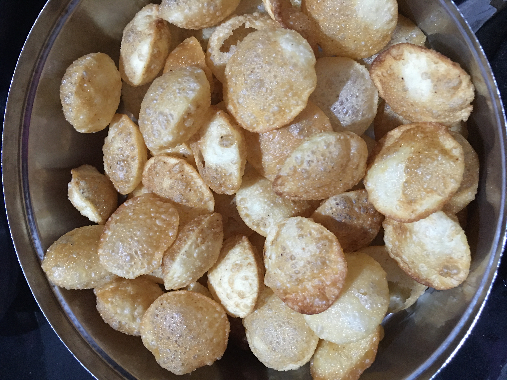
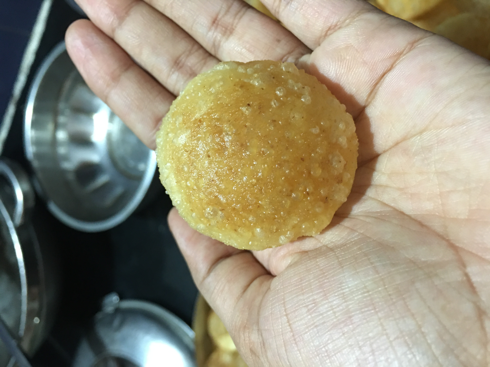
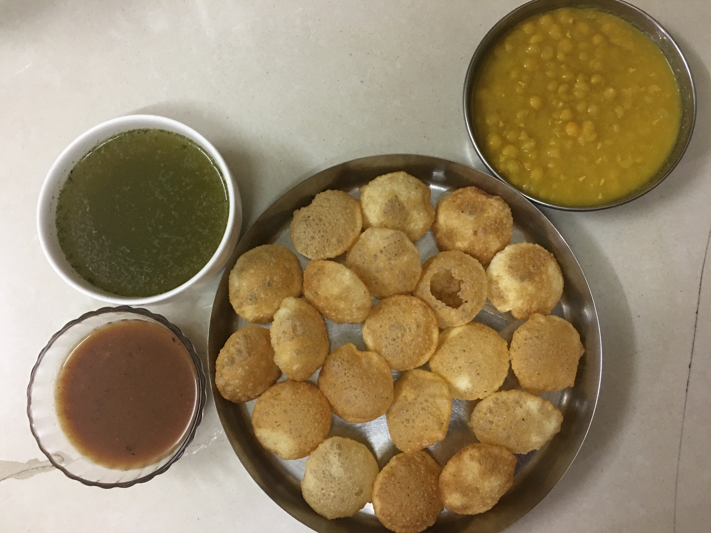
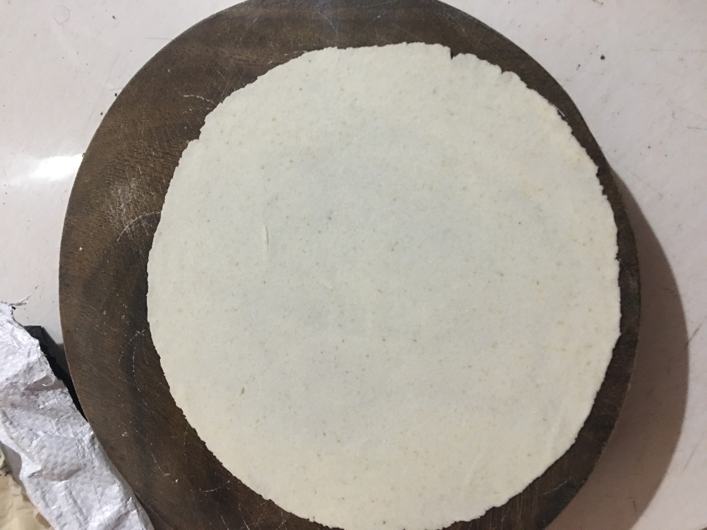
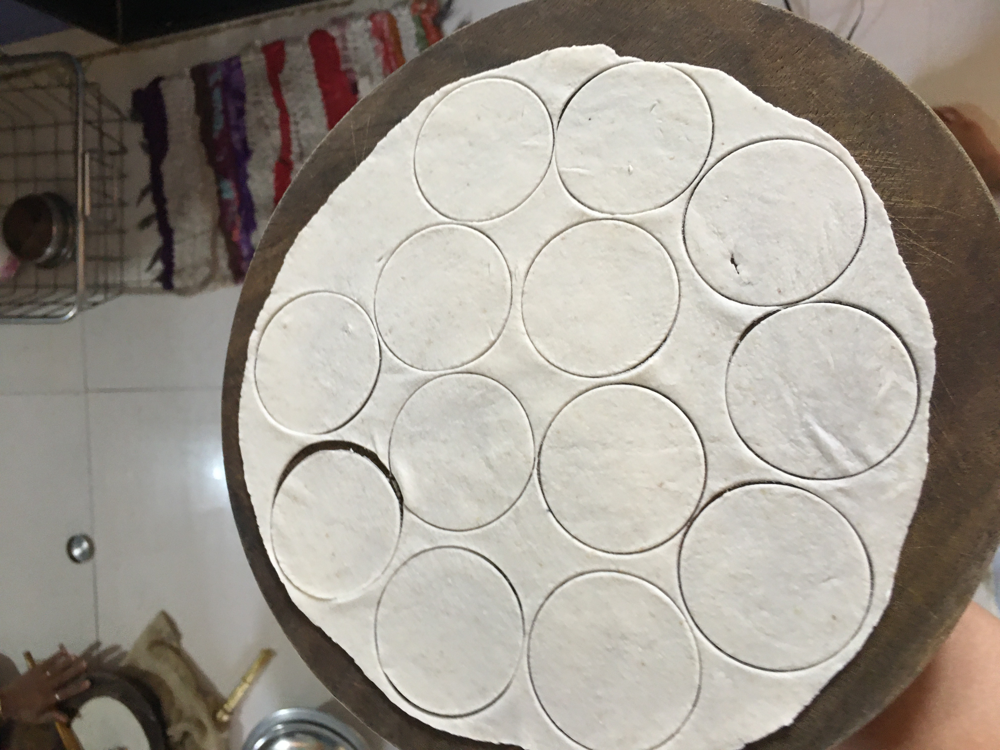
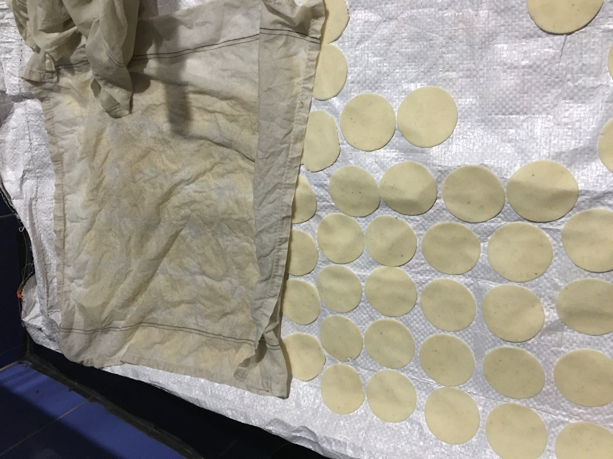
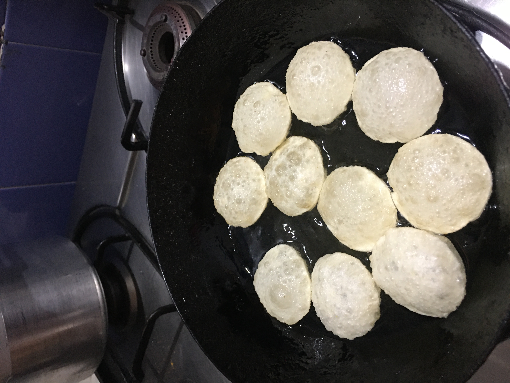
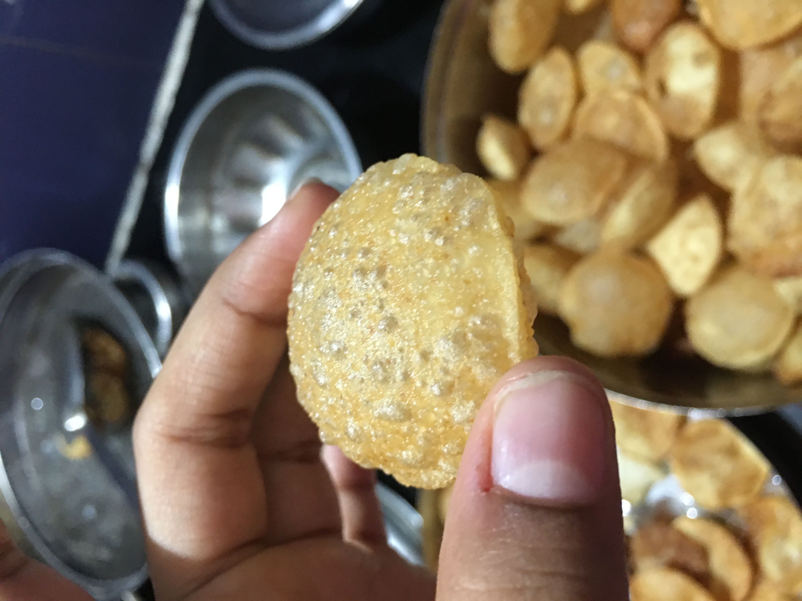
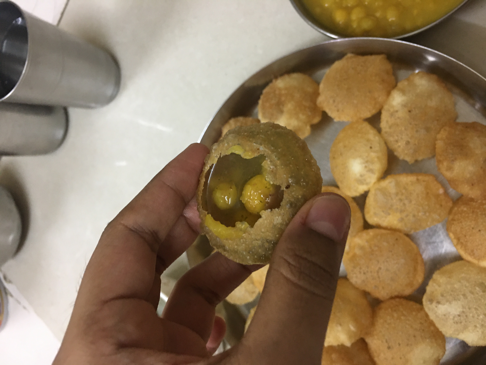

<
<
PANI PURI (PURI)
PANI PURI(PURI)
After following this method, you will be able to make puri for pani puri at home. After eating this puri, you won't buy it from market.
This puri will be crispy and will look and taste exactly like market puri.



- Preparation time=60 minutes
- Cooking time=30 minutes
INGREDIENTS FOR PURI-
> Rava - 200 gms
> Water- 1/2 cup (100 ml)
> Oil, for frying
METHODS/STEPS-
- Take rava in a bowl (200 gm) and add water (100 ml) into it. Knead a tough dough.
- Cover the bowl with a cloth and rest it for 30 minutes.
- Divide it into small parts and cover it with cloth.
- Take one small part, put it on rolling board (on which we make roti) and knead the dough with pestle (2-3 minutes for each part). The more you knead the dough, puri will be more softer.
To know what pestle is >>click here!
- With the rolling pin, flatten the small kneaded ball into a roti. The roti's thickness must be such that you can see the rolling board through it.

- Take a bowl with small radius and sharp edge of puri's size. Use it to cut small circles from the roti.

- Take a thick cloth. Drench it in water and squeeze it tightly to remove excess water from it. Ensure that there is no water inside this cloth. Then spread the cloth and put the small puris on it. Ensure that the side touching the rolling board is the one that touches the cloth.
- Then take another thin cloth. Drench it in water and squeeze it tightly to remove excess water from it. Ensure that there is no water inside this cloth. Then cover the puris kept on wet thick cloth with this wet thin cloth. This process is done to ensure that the puris does not dry.

- Make puris of the remaining small parts. Keep them covered in wet cloths like before. In case if the cloth above puris dries, then again drench it in water, squeeze it tightly and cover the puris with it.
- Take a vessel to deep fry puris. Pour oil into it, thus filling 1/2 of the vessel. Keep it on very high flame. Before fry ing, ensure that the oil is hot. You can check if the oil is hot enough by putting a little portion of puri inside it. And if it the puri in oil comes up quickly then the oil is perfectly hot.
- After ensuring oil is hot, let it be on high flame as before. Then pick the puri from cloth and dip it in oil. Ensure that you do NOT flip the puri and put the side touching the thick cloth into the oil.
- After the puri is immersed in oil, tap it gently but continuously with skimmer to puff the puri. Then dim the flame. Then keep on flipping the puri continuously till colour changes to golden-light brown.
To know what pestle is >>click here!

- Once the colour changes, take out the puri and keep it on tissue paper or on strainer so that excess oil is removed.
- After the 1st puri puffs, flip it and put 2nd puri in oil. Tap the 2nd puri, again puff it up and flip it. Then put the 3rd puri and repeat the process. You can put 5 puris like this. Don't forget to flip previous puris.
- Once all 5 puris are puffed, dim the flame and continuosly flip all the puris till they turn into golden-light brown shade.Then remove them.

*If the puri does not puffs, then these could be the problems:
- The cloth covering the puris is dry. In case this happens, wet the cloth, squeeze the water from it and keep it on puris for 5 minutes.
- The puri is too thin.
- You might not be tapping puri properly.

Your puri for pani puri is ready!!!!!!!!! Now it's time for you to go for it.
For more recipes, stay connected!